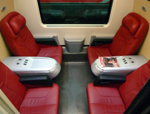

Visiting Albania... Albania, which Albanians call Shqipëria or Land of the Eagles, was once the most mysterious country in Europe. It became a Stalinist dictatorship in 1946, and was almost completely shut off from the rest of the world for decades. However, the Communist regime was overturned in 1991 and in spite of well-publicised troubles in 1992 & 1997, most of Albania is now safe to visit - you can check here. The statue of Skënderbeg, Albania's national hero, in Skënderbeg Square in Tiranë COVID-19 update: Trains are running between the UK & continental Europe. Eurostar is running a reduced service. Beyond Paris & Brussels, train service is now normal. From London to Tirane Day 1, travel from London to Paris by Eurostar, leaving London St Pancras at 09:31 arriving Paris Nord at 12:47. Cross Paris by metro or taxi to the Gare de Lyon (2 stops on RER line D). Tip: On Mondays-Saturdays, have lunch at the remarkable Train Bleu restaurant inside the Gare de Lyon. Day 1, travel from Paris to Milan by high-speed TGV, leaving Paris Gare de Lyon at 14:43 and arriving at Milan Porta Garibaldi at 21:49. It's a relaxing and comfortable journey, passing directly from France into Italy via Modane and the Mont Cénis tunnel through the Alps. The TGV has 1st & 2nd class plus a cafe-bar serving drinks, snacks & tray-meals. What's the journey like? See the Paris-Milan TGV video guide. Stay overnight in Milan. The AC Milano Hotel (a Marriott Lifestyle Hotel) is 350m from Milan Porta Garibaldi station and gets good reviews. Day 2, travel from Milan to Bari by air-conditioned Frecciarossa train leaving Milan Porta Garibaldi at 10:13 and arriving Bari Centrale at 17:27. There is a cafe-bar, or feel free to bring your own food & wine. The train follows the Adriatic coast for much of the way, past small towns and seaside resorts. In Bari, you can walk (25 minutes) or take a taxi to the ferry terminal, which is next to Bari's attractive old town. If you'd like to reach Bari earlier, there's an earlier 07:05 Intercity train from Milan Centrale (a short taxi ride or 25 minute walk from Milan Porta Garibaldi) arriving Bari Centrale at 17:05. Day 2, sail from Bari to Durrës in Albania by overnight ferry, usually sailing around 22:00 and arriving around 07:00 or 08:00. The easiest way to check ferry times & prices for all ferry operators on this route is at Direct Ferries, which checks all operators at once. Grandi Navi Veloce sail daily overnight departing Bari at 22:00 or 23:00 and arriving Durres at 08:00 (day 3 from London), Ventouris Ferries also sail daily overnight to similar timings. Adria ferries sail overnight too, also leaving at 22:00 or 23:00 and arriving at 08:00. Whichever operator you choose, a range of comfortable cabins is available on the overnight crossings. Day 3, morning: See the timetable below for train service within Albania from Durrës. From Tirane to London Day 1, sail from Durrës to Bari by overnight ferry, usually sailing around 22:00 and arriving around 07:00 or 08:00. The easiest way to check ferry times & prices for all ferry operators on this route is at www.directferries.co.uk, this checks all of them at once. Grandi Navi Veloce & Ventouris Ferries both sail daily leaving Durrës at 22:00 or 23:00 and arriving in Bari at 07:00 or 08:00 next morning, see www.gnv.it & www.ventouris.gr. You can also try Adria ferries (www.adriaferries.com) who also sail overnight. Whichever operator you choose, a range of comfortable cabins is available on the overnight crossings. Day 2, travel from Bari to Milan by air-conditioned Frecciargento train leaving Bari Centrale at 10:30 and arriving in Milan Centrale at 17:55. There is a refreshment trolley, or feel free to bring your own food and wine. In Milan, it's a 25 minute walk or 8-minute €8 taxi ride from Milan Centrale to Milan Porta Garibaldi. Stay overnight in Milan, a beautiful city that's well worth an extra day for a stopover. The AC Milano Hotel (a Marriott Lifestyle Hotel) is 350m from Milan Porta Garibaldi and gets good reviews. Day 3, travel from Milan to Paris by high-speed TGV, leaving Milan Porta Garibaldi at 06:00 and arriving Paris Gare de Lyon at 13:13. There is a café-bar serving drinks, snacks & light meals, and it's a scenic journey through the Alps via the Mont Cénis tunnel, Modane and Chambéry. What's the journey like? See the Paris-Milan TGV video guide. Cross Paris by metro or taxi to the Gare du Nord, 2 stops on RER line D. Day 3, travel from Paris to London by Eurostar, leaving Paris Gare du Nord at 15:13 & arriving London St Pancras 16:30 (16:37 on Sundays). How much does it cost London to Paris by Eurostar starts at £52 one-way or £78 return in standard class, £115 one-way, £199 return standard premier (1st class). Paris to Milan by TGV starts at €29 each way in 2nd class, €44 each way in 1st class. Milan to Bari starts at €29.90 in 2nd class or €39.90 in 1st class, each way. All these fares are dynamic, meaning they vary like air fares depending how popular that date & train is, and how far ahead you book. Bari to Durres by ferry: The cost varies by operator, season & type of seat/berth/cabin. For example: €47 - €65 each way in a reclining seat, depending on season (Adria). €51 each way with bed in outside 4-berth cabin (Ventouris Ferries). €74 - €101 each way with a bed in a 2-berth outside cabin (Adria). How to buy tickets... Step 1, start by booking the ferry. You can easily check prices & sailing dates for all Italy-Albania ferry operators using the Direct Ferries website. The price you initially see is for a 'deck place', you can add a cabin at the next stage. When you book, you are emailed a confirmation which you present at check-in to exchange for your boarding pass. Step 2, go to European train booking site www.raileurope.com . There's a small booking fee but all tickets can be booked easily in plain English all in one place. Anyone from any country worldwide can use raileurope.com as all international credit cards are accepted. Who are Raileurope.com? Booking for Eurostar opens up to 180 days ahead, for the TGV & Italian trains usually up to 120 days ahead, although British domestic trains usually only open around 90 days ahead. First book from 'London (any station)' to 'Milan (any station)', looking for the journey by Eurostar & TGV listed above which will be shown in the search results as having 1 change. Add this to your basket. It can help to read the detailed booking tips here. Raileurope.com can in fact book from any station in Britain, not just London. Use the suggested Eurostar times on this page as a guide, but feel free to choose an earlier Eurostar from London southbound, or a later Eurostar returning from Paris northbound, if these have cheaper seats available or if you'd like to stop off in Paris. To stop off and perhaps have lunch in Paris, run a London to Milan enquiry after clicking 'More options', entering 'Paris' and setting a stopover of however many hours you want. Second, book from Milan to Bari for the following day, add this to your basket and check out, paying for all your tickets as one transaction. You'll get print-at-home tickets for the Eurostar & the TGV, the Trenitalia train is ticketless, you simply print out the booking reference or show it on your phone. Easy! Alternatively, each train can also be booked at www.thetrainline.com, easily in plain English, in €, £ or $, also with print-your-own, show-on-smartphone tickets or ticketless. Who are Thetrainline.com? Alternatively, you can book each train separately direct from the relevant operator with no booking fee, although this means more work and the fares will be the same. First book your London-Paris train at www.eurostar.com, and the Paris-Milan TGV at www.sncf-connect.com. Both sites give print-at-home tickets with no booking fee. You can then book the Milan to Bari train at the Italian Railways website www.trenitalia.com(requires Italian-language place names and has a few quirks, but no booking fee, see this advice on how to use it), looking for a cheap Economy or Super-Economy fare. You pay online and quote your reservation reference to the conductor on the train. To book train tickets by phone, try Ffestiniog Travel or International Rail, see here for phone numbers & opening times. What's the journey like 1. London to Paris by Eurostar... Eurostar trains link London & Paris in 2h20, travelling at up to 300 km/h (186 mph). There are two bar cars, power sockets at all seats and free WiFi. Standard Premier and Business Premier fares include a light meal with wine (or breakfast, on departures before 11:00). There's a 30-minute minimum check-in at London St Pancras (45-minute minimum in Paris, Brussels & Amsterdam) as all border formalities are carried out before you board the train. More information about Eurostar including check-in procedure. St Pancras station guide. Paris Gare du Nord station guide. How to cross Paris by metro or taxi. A Eurostar e320 at St Pancras. More about Eurostar. 1st class: Standard Premier or Business Premier. A Eurostar e320 at St Pancras. Standard class seats. Larger photo One of two cafe-bars, in cars 8 & 9. Lunch in Paris at the Train Bleu restaurant? The trains to Italy leave from the magnificent Gare de Lyon in central Paris. Why not have lunch (or at least a drink in the bar) at the fabulous Train Bleu Restaurant inside the Gare de Lyon (pictured above right) before catching the train to Turin or Milan? Paris Gare de Lyon station guide. 2. Paris to Milan by TGV... SNCF (French Railways) operates three daily 186 mph TGV trains from Paris to Milan. Previously operated by Artesia, a consortium of Trenitalia & SNCF, they are now operated entirely by SNCF, officially via a new Italian subsidiary, Società Viaggiatori Italia. On leaving Paris they sprint over the high-speed line at up to 186 mph (300 km/h) as far as Lyon St Exupéry, but they then slow right down to meander through the scenic Alpine foothills on conventional lines via Chambéry, crossing into Italy at Modane and heading through Turin to Milan. These TGVs have 1st & 2nd class seats and are fully air-conditioned, with new interiors designed by Christian Lacroix. There are power sockets for laptops and mobiles at every seat and there are baby-changing facilities and designated spaces for passengers in wheelchairs. There's a cafe-bar serving drinks, snacks & light meals, or feel free to bring your own food & wine along for the journey. In first class you can order a 3-course meal with wine, served at your seat. You can now buy Paris metro tickets from the bar car, too. 1st class TGV passengers can use the Grand Voyageurs 1st class lounge at Paris Gare de Lyon. Incidentally, SNCF's experienced in-house designer still hasn't forgiven Christian Lacroix for breaking the unwritten rule and using warm colours in 2nd class, cooler colours in 1st class, so see what you think! The afternoon TGV to Milan at Paris Gare de Lyon. There's no check-in, just be on board at departure time... 2nd class with mix of unidirectional seats & tables for 4. Seats 2+2 across car width. Larger photo. The cheese platter bought from the cafe-bar as the mountains swept by... The TGV leaves Paris behind & speeds across rural France at up to 186 mph, past fields, woods, pretty villages... ...it calls at Lyon St Exupery then slows right down through the Alpine foothills. The TGV crosses the Alps via Chambéry and Modane, passing through the 13.6 km (8.5 mile) long Fréjus Rail Tunnel, also known less accurately as the Mont Cénis tunnel. The tunnel transit takes just 7 minutes, during which the train enters Italy. Opened in 1871, this the oldest of the large tunnels through the Alps, and was the longest tunnel in the world from 1871 until 1882 when the Gotthard tunnel opened on the Zurich-Milan route. More mountains. Now we're in Italy, leaving the Alps behind... Scenery between Oulx and Turin... Photos courtesy of DiscoverbyRail.com. Arrival at Milan's modern Porta Garibaldi station, an 8-minute €8 taxi ride or 25 minute walk from Milan's main Centrale station. 3. Milan to Bari by Frecciarossa 500... The Frecciarossa 500 has 4 classes, Standard, Premium, Business and Executive. There's a cafe-bar, power sockets at all seats & free WiFi. Business class includes complimentary coffee, juice or prosecco and snacks. Executive class includes a more comprehensive food & drink service. A Frecciarossa 500 at Milan Centrale... Standard class... Standard class table for 4. Premium class... Premium class table for 4. Executive class, just 8 seats at one end of the train.  Business class salottino (4-seat compartment)... Executive class, just 8 seats at one end of the train. Executive class meeting room... Executive class includes a complimentary cold tray meal with wine and prosecco.... Cafe-bar, available to all passengers for coffee, beer, wine, snacks.... Bari Centrale. The ferry terminal is 25 minutes walk away, through the old town. Courtesy of DiscoverByRail.com. 4. Bari to Durres in Albania by ferry... The GNV ferry Azzurra, one of the ships which operate the Bari-Durres service. Courtesy of Gwylan Williams Traveller's reports... Traveller Gwylan Williams sailed from Bari to Durres with GNV in 2019: The ferry was very good, and we had a smooth crossing. There were a lot of staff available to help with luggage etc, all in crisp, clean, uniforms. The bunk beds were nice and wide, comfortable and clean, we both slept very well. The en suite shower room was good too, with a decent shower and plenty of hot water. Although the sailing was late at night, there was freshly cooked food available, they seemed geared up to cater for the lorry drivers. Good breakfast too. We couldn't change money for Leks on board but they told us where to go once we landed at Durres and we had a perfectly good exchange rate there. Back to top London to Tirane overland You can also travel overland to Albania, by train from London & Paris to Belgrade, then the spectacular railway from Belgrade to Podgorica or Bar in Montenegro, then by bus or taxi to the border and on to Shkodër, for the daily Albanian train to Tiranë. There may be security concerns in some border areas of Albania, so check the latest Foreign Office travel advice at www.gov.uk/foreign-travel-advice. The overland option generally takes a day or two longer than the more straightforward train & ferry option via Italy, but you can stop off and see some remarkable parts of the Balkans on the way, such as Belgrade and Montenegro. Why not go out by ferry and back overland, or vice versa? Here's how to travel overland: From London to Tirane Step 1, travel from London or Paris to Belgrade as shown on the London to Serbia page. The journey takes 2 days and 1 night, or 2 nights. Arrange train tickets as shown on that page. Allow at least 2 or 3 hours in Belgrade for onward connections (or stop overnight) as trains may arrive in Belgrade an hour or two late. Note that the Zagreb-Belgrade train is still suspended due to Covid-19, Serbia cut off. Step 2, then take a train from Belgrade to Podgorica or Bar in Montenegro over the fabulous Belgrade-Bar railway. There is a choice of daytime train or overnight sleeper train on this route. The daytime train means a long journey but it's a good choice for the fantastic scenery along this remarkable rail line. However, it requires an overnight in Podgorica or Bar. The sleeper train is more time-effective and it puts you in Podgorica or Bar in the morning with time to make your way to Shkodër in Albania that day, and you'll still see the best scenery at the southern end of the line. See the Belgrade to Montenegro page for times, fares, photos & info. You can check train times at the Serbian Railways website www.srbvoz.rs. Buy your ticket at the station. Step 3, you have a choice of going via Bar or Podgorica, as follows: Option 1, get off at Podgorica... Buses link Podgorica with Shkoder & Tiranë once or twice a day, try busticket4.me/EN. You get off in Shkoder and take a train from Shkoder to Tiranë if you like, more fun than staying on the bus. Alternatively, take a Montenegrin taxi from Podgorica to the Albanian border at Han i Hot for around €20, cross into Albania, then take an Albanian taxi from Han i Hot to Shkodër for around €20 more. The total distance from Podgorica to Shkodër is 59.7 km, the journey should take about 90 minutes including a change of taxis at the border crossing. Stay overnight in Shkodër. Next day, take a train (if running, see below) to Durrës & Tiranë, see the train timetable section below. Map of Podgorica/Bar/Shkodër area. Option 2, get off at Bar... Walk 250m from Bar station to Bar's main bus station. Buses run from Bar to Ulcinj every hour or two from 08:50 until 22:45, journey time about half an hour, fare around €2.50. Then there are three buses a day from Ulcinj (Montenegro) to Shkodër via the Muriqan border crossing, departing Ulcinj main bus station at 06:00, 12:30 & 16:30, taking an hour, fare around €6, or you can take a taxi from Ulcinj to Shkoder for around €15-€20. You can then stay overnight and take the morning train to Tiranë. Map of Podgorica/Bar/Shkodër area. From Tirane to London Day 1, take the train from Tiranë & Durrës to Shkodër (if running, see below) and stay overnight. See the train times below. On day 2, you have a choice: Option 1 is to travel by taxi to Podgorica in Montenegro as follows: Travel by taxi via the Han i Hot border to Podgorica in Montenegro, or travel by bus to Ulcinj then another bus to Bar in Montenegro. If you choose the taxi option, the total journey from Shkodër to Podgorica is 59.7 km, and should take about 90 minutes including the need to change taxis at the border. Each of the two taxis should cost in the region of €20. Map of Podgorica/Bar/Shkodër area. Option 2 is travel by bus to Ulcinj in Montenegro then onwards by bus to Bar. There are three buses a day from Shkodër to Ulcinj in Montenegro via the Muriqan border crossing, at the time of writing these were at 09:00, 14:15 & 16:00, fare around €6, journey time around an hour. There are then regular buses from Ulcinj to Bar every hour or two, journey time half an hour, fare around €2.50. Alternatively, a taxi from Shkodër to the border at Muriqan and on to Ulcinj should cost about €15-€20. Map of Podgorica/Bar/Shkodër area. Two daily trains link Bar & Podgorica with Belgrade Topcider station, one a daytime train, the other an overnight sleeper with sleeping-cars and seats, see the Belgrade to Montenegro page for times, fares, photos & info. The sleeper train will save you time as you can leave in the evening of day 2 and arrive in Belgrade on the morning of day 3. But staying overnight and taking the day train is good because of the fantastic scenery along this route (you'd then arrive in the evening of day 3). You can check train times at the Serbian Railways website www.srbvoz.rs, and book the train from Belgrade to Podgorica or Bar at the station. Travel from Belgrade to Paris or London as shown on the London to Serbia page. The journey takes 2 days and 1 night, or 2 nights. Arrange train tickets as shown on that page. Note that the Belgrade to Zagreb train is still suspended due to Covid-19, Serbia is cut off. Back to top Travelling by train in Albania Travelling by train in Albania is an experience not to be missed. Second hand coaches from Italy, Austria or Germany hauled by Czech-built diesels clickety-clack across the countryside at about 35 mph (or less!). Don't be surprised by torn seats or broken windows, but then, what do you expect for 50p? You may be able to check these train times at www.hsh.com.al, but please also double-check locally. All trains are one class only. Update 2022: In September 2022 only one train is operating, Durres-Elbasan at weekends as shown below. The Durres-Kashar line is closed for rebuilding. Feedback appreciated! Durrës ► Tiranë Durres depart - Kashar arrive - Tirane arrive - Tiranë ► Durrës Tiranë depart - Kashar depart - Durrës arrive - Kashar station is 7.6 km from central Tiranë, local city buses available. In 2015 a new service started between Durres & Kashar, 7.6 km from Tiranë. The old station in Tiranë was closed in September 2013 and since then there have been no trains at all between Durrës & Tiranë. But from 26 May 2015 a service resumed between Durres and a station on the outskirts of Tiranë called Kashar, details shown here. In the longer term a new Tiranë station is allegedly being built, allegedly near the Hygeia Hospital, see this map. If you have any more details, please email me. There were previously 7 or more daily trains in each direction between Durres and Tiranë, the service shown here follows the fuel shortages and reduction in service. On a good day you can find the latest timetable at http://hsh.com.al. Tiranë & Durrës ► Shkodër Tiranë depart - Durrës depart - Vorë arrive - Vorë depart - Milot arrive - Shkodër arrive - Shkodër ► Durrës & Tiranë Shkodër depart - Milot depart - Vorë arrive - Vorë depart - Durrës arrive - Tiranë arrive - Tiranë & Durrës ► Vlorë & Elbasan Days of operation: Sat & Sun Durrës depart 14:00 Rrogozhinë arrive 15:17 Rrogozhinë depart 15:18 Elbasan arrive 16:53 Librazhd arrive - Pogradec* arrive - Lushnjë arrive - Fier arrive - Vlorë arrive - Elbasan & Vlorë ► Durrës & Tiranë Days of operation: Sat & Sun Vlorë depart - Fier depart - Lushnjë depart - Pogradec* depart - Librazhd depart - Elbasan depart 06:30 Rrogozhinë arrive 08:05 Rrogozhinë depart 08:06 Durrës arrive 09:23 * = There have been no trains to or from Pogradec since 2012. Fares and how to buy tickets... Fares are incredibly cheap. Durrës to Kashar one-way costs 70 Lek, or about 50p, with the city bus between Kashar and central Tiranë costing an extra 30 Lek. Durrës to Shkodër is 160 Lek, about £1. Tickets are not sold in advance, only for the next train. What are Albanian trains like Trains offer one class only. Most are composed of second-hand German suburban carriages like these. Photos courtesy of Philip Dyer-Perry. The cars are grubby but perfectly comfortable. Above right, an Albanian Railways poster at Shkodër, showing a British Rail InterCity 125... International links from Albania... There are no international trains to or from Albania, but here's how to travel to or from neighbouring countries by bus, taxi or ferry... Travelling from Tiranë to Bar (Montenegro), Podgorica (Montenegro) & Belgrade (Serbia) Day 1, take the afternoon train from Tiranë to Shkodër and stay overnight. See the train times above. Take a bus if the train isn't running. On day 2, you have two options: Travel by taxi via the Han i Hot border to Podgorica in Montenegro, or travel by bus to Ulcinj then another bus to Bar in Montenegro. If you choose the taxi option, the total journey from Shkodër to Podgorica is 59.7 km, and should take about 90 minutes including the need to change taxis at the border. Each of the two taxis should cost in the region of €20. If you choose the bus option, there are three buses a day from Shkodër to Ulcinj in Montenegro via the Muriqan border crossing, at the time of writing these were 09:00, 14:15 & 16:00 (in the other direction, buses leave Ulcinj for Shkodër at 06:00, 12:30 & 16:30). There are then reasonably frequent buses from Ulcinj to Bar. Alternatively, a taxi from Shkodër to the border at Muriqan should cost about €10-€15, and a taxi from Muriqan to Ulcinj around €20-€25. Two daily trains link Bar & Podgorica with Belgrade, one a daytime train, the other an overnight sleeper with sleeping-cars and seats. The sleeper train will save you time as you can leave in the evening of day 2 and arrive in Belgrade on the morning of day 3. But staying the evening of day 3). International trains link Belgrade with Budapest, Vienna, Zagreb, Bucharest and many other European destinations, see the international trains from Belgrade page or use the journey planner at www.bahn.de to find train times. In the other direction for travel to Albania, simply reverse the steps shown above.